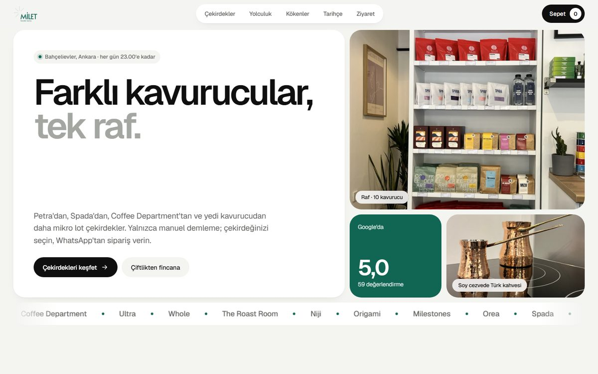
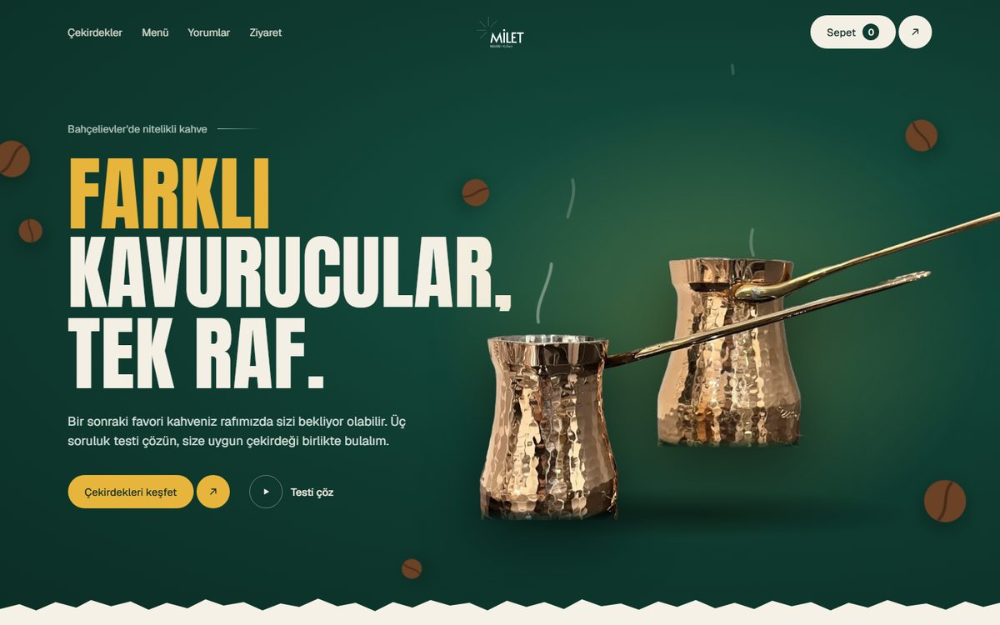
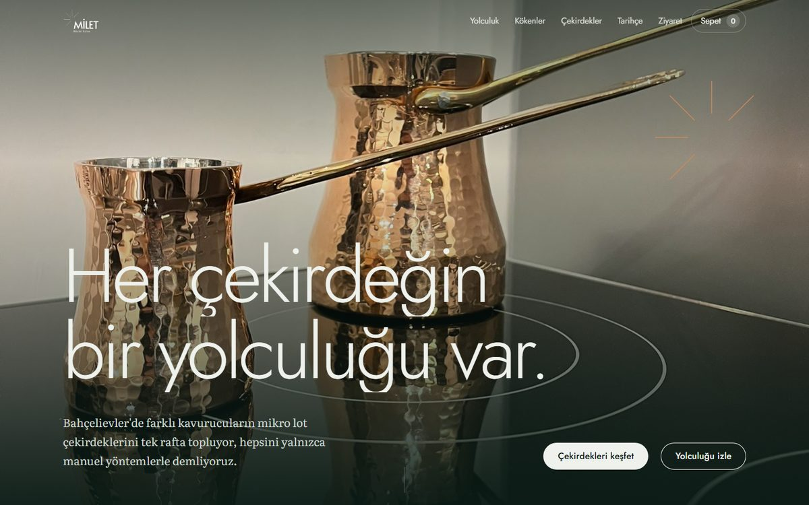

Minimal
Beyaz kartlar, sakin ve modern. Çekirdekler ve sipariş en önde; Apple tarzı bir düzen.
Açık zeminKart düzeniHızlı sipariş
Tasarımı aç

Vitrin
Koyu yeşil ve altın. Büyük başlıklar, dekupe cezve, kategoriler ve misafir yorumlarıyla marka vitrini.
Yeşil ve altınGüçlü başlıklarMarka odaklı
Tasarımı aç

Hikâye
Kahvenin tarladan fincana yolculuğu: köken haritası, kavurma, tarihçe ve SCA puan ölçeği. Kaydırdıkça anlatan sayfa.
Koyu temaKaydırmalı anlatımKökenler
Tasarımı aç